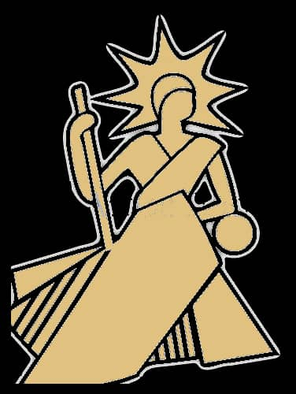
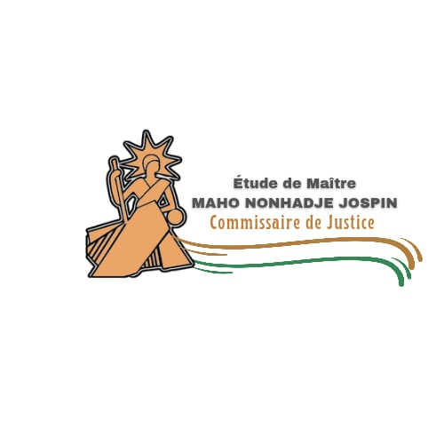

Le Cabinet YAH, dirigé par Maître Maho N. Jospin, Commissaire de Justice assermenté, accompagne particuliers, entreprises et institutions dans l'exécution des décisions de justice, les significations d'actes, les constats et le recouvrement de créances sur San Pedro et sa juridiction.

Commissaire de Justice
Sous l'autorité du Ministère de la Justice

Le Commissaire de Justice est un officier public et ministériel, auxiliaire de justice assermenté, chargé par la loi de mettre en œuvre l'exécution des décisions de justice et d'authentifier les actes et les faits. Depuis San Pedro, le Cabinet YAH met cette autorité au service des particuliers, des entreprises, des banques et des institutions.
Notre étude conjugue exigence procédurale, confidentialité et sens du dialogue, pour garantir à chaque client un traitement rigoureux et diligent de ses dossiers.
Des significations d'actes aux ventes aux enchères, le Cabinet YAH exerce l'ensemble des attributions du Commissaire de Justice.
Assignations, sommations, notifications de jugements et actes extrajudiciaires, délivrés dans le strict respect des formes légales.
En savoir plus →Mise en œuvre des jugements et titres exécutoires : saisies, expulsions, recouvrement forcé de créances.
En savoir plus →Procès-verbaux de constat opposables, établis avec impartialité pour servir de preuve devant toute juridiction.
En savoir plus →Relance amiable et procédures judiciaires de recouvrement pour sécuriser le règlement de vos impayés.
En savoir plus →Organisation de ventes aux enchères publiques, mobilières et immobilières, judiciaires ou volontaires.
En savoir plus →Assistance et conseil aux particuliers, entreprises et bailleurs sur leurs droits et procédures.
En savoir plus →Une pratique fondée sur l'impartialité et le respect strict de la loi.
Le secret professionnel garanti sur l'ensemble de vos dossiers.
Un traitement diligent des dossiers, dans le respect des délais légaux.
Une exécution méthodique et conforme aux exigences procédurales.